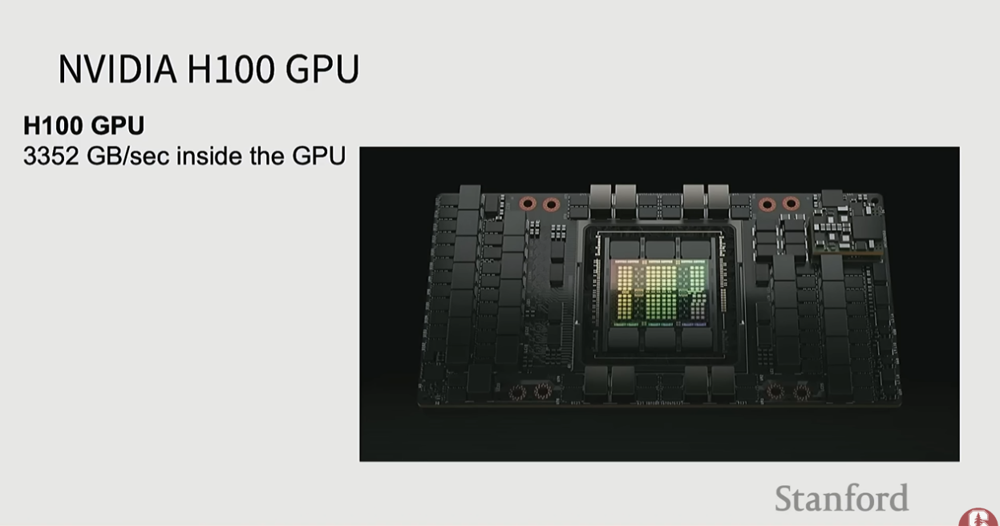

As models grow beyond billions of parameters, training on a single GPU becomes impossible. Distributed training splits computation, memory, and data across hundreds or thousands of GPUs. This topic covers the key strategies, hardware constraints, and efficiency metrics for large-scale model training.
| Model size | Single GPU memory needed |
|---|---|
| 1B parameters | ~8 GB |
| 10B parameters | ~80 GB |
| 100B parameters | ~800 GB minimum |
Memory per parameter with Adam optimizer:
At BF16/FP16: 2 bytes × 4 numbers = 8 bytes per parameter. → 100B params = 800 GB minimum just for weights + optimizer states.
Each SM has:
The Meta Llama 3 cluster architecture shows the real hierarchy:
| Scale | Bandwidth | Technology | Example |
|---|---|---|---|
| Inside 1 GPU | 3,352 GB/s | HBM memory | On-chip, fastest |
| 1 server (8 GPUs) | ~900 GB/s | NVLink/NVSwitch | Between GPUs |
| 1 rack (16 GPUs) | ~900 GB/s | NVSwitch domain | Same rack |
| 1 pod (3,072 GPUs) | ~50 GB/s | InfiniBand/Ethernet | Across racks |
| Full cluster (24,576 GPUs) | <50 GB/s | Cross-pod networking | Across pods |
Analogy: 1 GPU = talking to yourself; 8 GPUs = people in the same room; 3K GPUs = people across a city; 24K GPUs = people across continents on Zoom.
Communication becomes the bottleneck at scale — collective operations (all-reduce) dominate training time at pod scale.

Same model on every GPU; each GPU processes a different mini-batch.
Split individual weight matrices across multiple GPUs.
Split model layers across GPUs in stages. Microbatch scheduling keeps all stages busy.
For very long sequences (16K–128K tokens), split the sequence across GPUs:
Ring Attention with Blockwise Transformers for Near-Infinite Context
Saves only a subset of activations during the forward pass and recomputes the rest on-the-fly during backprop. Trades extra compute (one extra partial forward pass) for large memory savings. Enables training much deeper networks.
Real large-scale training combines multiple strategies simultaneously:
HFU = achieved FLOPs / theoretical peak FLOPs
H100 theoretical: 989.4 TFLOPS/sec of 16-bit matrix multiplications. In practice, large matrix multiply gets ~80% HFU. Ignores real overhead — too optimistic for actual training.
MFU = theoretical model FLOPs per step / actual wall-clock FLOPs per step
| MFU | Rating |
|---|---|
| > 40% | Excellent |
| 30–40% | Good |
| < 30% | Investigate bottlenecks |
Large-scale LLM training: typically 30–45%. Why MFU drops on newer GPUs: compute grows faster than memory bandwidth. A100→H100 gave ~3.1× FLOPs but only ~2.1× memory bandwidth → memory-bound bottleneck grows.